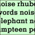

| Pic // | Name // | In Brief // |

| MY CAT HAS A BETTER LIFE THAN ME | "Saturday night boredom in suburbia - you know you've been there." |

| NORMAL LIFE | "It is about the struggle of a young girl, trying to come to terms with her dysfunctional family and a past that is unexplained. It also explores the role of a father in today's society." |
|
| WOY WOY | "A cold conversation from everyday Australia. |
|
| BLACK DEATHS IN CUSTODY | Nobody should be locked up, especially for petty crimes. |
|
| LIFE - PENDING DIRECTION FROM FRANCIS FORD COPPOLA | So who is directing your life, huh? |
|

| AUSTRALIA DAY LONG WEEKEND | "Australia Day long weekend. Friendship. Stupid conversations with your mates. Love, and how it only happens to some of us." |
|
| BETWEEN THE GOLDEN ARCHES | A short poem exploring the contradictory (dialectic) relationship between affect and the normative social, between desire and thought, etc - or, perhaps, explaining how I shit myself when I am around this chick I like. Who I think I am overcomes who I feel I am. |

| THE HAIRDRESSER'S DAUGHTER | "A modern fairytale about ugliness, envy and hair." |

| SHRUG | "Black mesh, riding up." |
|
| THE PEOPLE I KNOW | "This is a little poem all about me and some of the people I have come across in life and love to call my friends." |
|
| THE RUNNER | "One woman rewrites her fairytale ending." |

| CANINE ETHNICITY | "A pub story." |
|
| PICTURE POSTCARDS | "This piece was an accident, written in the stupor of my uni tutes last semester. |
|
| WHITE WASH DREAMING | "Michael Dransfield, my first poetic hero. This poem translates the only conversation that I have ever had with him. And may never have again." |
|
| START | "Girl meets boy." |